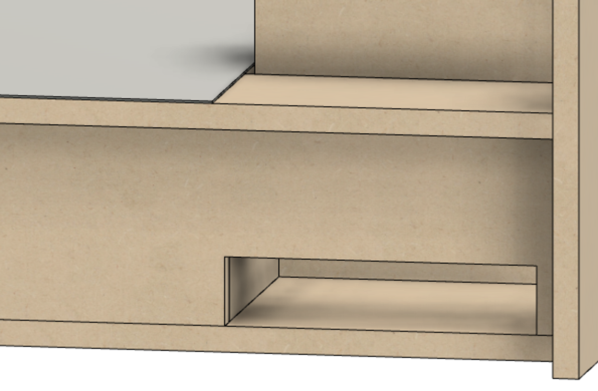

Preventative Maintenance
on the MDF Rose Engine Lathe 2.0

|
|
Cleaning, Lubrication, and
Preventative Maintenance on the MDF Rose Engine Lathe 2.0 |
|
This document is intended to help the user of the MDF Rose Engine Lathe 2.0 keep it in tip top shape.
Schedule of Activities
|
Lubricate the Spindle Shaft The bronze bushings and thrust washers specified for the MDF rose engine lathe are oil impregnated and that lubrication will last a long time. Regardless, the spindle shaft should be lubricated annually to minimize wear. To do this,
Recommended lubricants:
|

Design for Cleaning Out Sawdust (Parts removed for clarity) Vacuum Out Sawdust The bottom of the headstock is tapered towards the center, and has an opening which is 3/4" x 5". This is to allow any sawdust which may enter the headstock to fall through into the base. The blue arrows in the picture to the right show the path this dust will follow.

Opening to Vacuum Out Dust There is also an opening in the far side of the base to allow for vacuuming out the sawdust which falls through (and around) the headstock. This is shown in the picture to the left. |
{kind=link}
{kind=link}